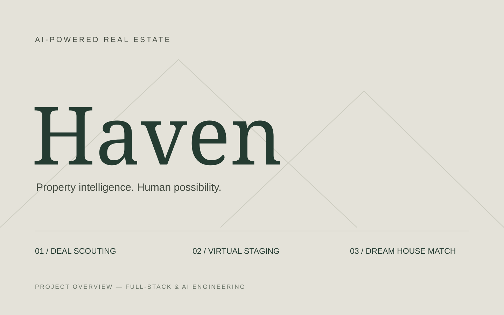
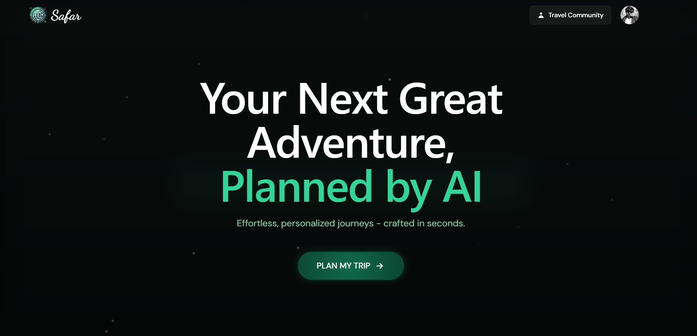
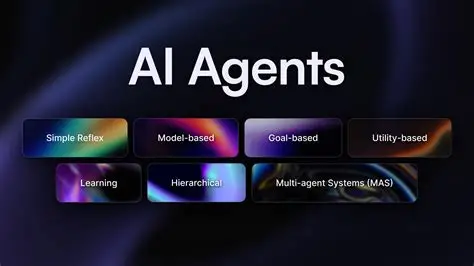

01 / AI / REAL ESTATEAI-powered property intelligence

VIEW PROJECT ↗A real estate platform combining AI deal scouting, property research, virtual staging, and lifestyle-based recommendations to help investors make informed decisions.
Full-stack AI engineer building intelligent web applications, autonomous agents, and thoughtful digital experiences.
Explore my work ↘Selected work in AI, full-stack development, and automation. From personalized travel planning to intelligent real estate research.
View résumé
VIEW PROJECT ↗A real estate platform combining AI deal scouting, property research, virtual staging, and lifestyle-based recommendations to help investors make informed decisions.

VIEW PROJECT ↗A smart travel planner that generates personalized itineraries, hotel suggestions, and routes with Gemini and Google Places. Built with Firebase authentication and location intelligence.

VIEW GITHUB ↗An AI agent that turns travel data into tone-aligned captions and emojis, automating social content with Mistral-7B, Firebase, and the Twitter API.
I’m Gourav, a full-stack AI engineer bringing together robust engineering and a 3D artist’s eye for detail.
I build with React, Next.js, Node.js, and Python, connecting thoughtful interfaces to scalable backends and LLM-powered workflows. My focus is making complex technology feel clear and useful.
From Safar AI’s personalized travel itineraries to Haven’s property intelligence, I turn ideas into working products. I hold a B.Tech in Computer Science & Engineering from IITM, Sonipat (2021–2025).
A closer look at my résumé ↗React · Next.js · TypeScript · Tailwind CSS · GSAP · Framer Motion
Node.js · Express · Python · PostgreSQL · Prisma · MongoDB · Firebase · Redis
Gemini · Claude · OpenAI · Prompt engineering · Agentic workflows · Git · Vercel
Building end-to-end AI solutions and agentic workflows. Developing Haven’s real estate intelligence and contributing to Safar AI’s personalized travel planning, with a focus on reliable, responsive experiences.
Built responsive websites, animated landing pages, and custom content management systems. Connected design and engineering to help clients manage their content and launch faster.
Developed React and Tailwind interfaces, integrated REST APIs, and collaborated on code reviews, debugging, and deployments. Optimized assets and responsive behavior across devices.